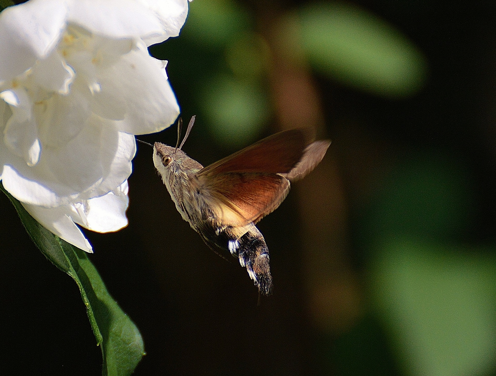

Was wäre eine Sommerwiese ohne Schmetterlinge? Aufgetankt durch das wärmende Sonnenlicht flattern die Falter von Blüte zu Blüte.
Schmetterlinge, Falter, Schwärmer & Co
Schmetterlinge stellen mit rund 170.000 bekannten Arten eine der größten und beliebtesten Insektengruppen auf unserer Erde. Der wissenschaftliche Name für Schmetterlinge lautet Lepidoptera – vom Griechischen "lepis", was Schuppe bedeutet, und "pteron", was für Flügel steht: Schuppenflügler.
Schmetterlinge, Falter, Schwärmer & Co

Der Begriff "Schmetterling" ist der Überbegriff für diese Insektengruppe. "Falter" nennt man den Schmetterling in seinem letzten Stadium, jenes, in dem er Flügel hat und flattert – im Gegensatz zur Raupe oder Puppe.
Schmetterlinge werden zunächst in zwei Gruppen eingeteilt: in Tagfalter und in Nachtfalter. Nur rund 18.000 der bekannten Arten gehören zu den Tagfaltern, die viel größere Gruppe der Schmetterlinge zu den Nachtfaltern.
Es wäre naheliegend zu glauben, dass alle Tagfalter tagaktiv, und alle Nachtfalter nachts unterwegs sind, was aber so nicht stimmt. So gehören beispielsweise die Widderchen zu den tagaktiven Nachtfaltern.
Falsch wäre es auch zu glauben, dass alle bunten Schmetterlinge automatisch zu den Tagfaltern gehören und alle farblosen zu den Nachtfaltern. Das große Nachtpfauenauge beispielsweise ist ein bunter großer Nachtfalter.
Es gibt andere Unterscheidungsmerkmale, an denen man die beiden Gruppen erkennen kann. Tagfalter stellen beispielsweise ihre Flügel in Ruheposition senkrecht in die Höhe, während die Nachtfalter ihre Flügel flach an den Körper drücken: die Hinterflügel sind dabei von den dachförmig gefalteten Vorderflügeln fast oder ganz bedeckt.
An den Fühlern, auch Antennen genannt, kann man die jeweilige Gruppenzugehörigkeit ebenfalls erkennen: Ein Nachtfalter hat oft gefiederte oder kammartige Fühler, während die Fühler der Tagfalter immer glatt sind und sich am Ende zu Keulen verdicken.
Die Schwärmer gehören zu den Nachtfaltern, wobei es auch unter ihnen einige rein tagaktive Arten gibt, wie beispielsweise das Taubenschwänzchen.
Sie sind meist große Falter mit schmalen Vorderflügeln und kurzen Hinterflügeln. Der Körper ist kräftig, spindelförmig, die Fühler einfach, aber verdickt. Die nackten Raupen haben am Hinterende ein Horn, wie beispielsweise die Raupe des Ligusterschwärmers. Schwärmerraupen verpuppen sich in der Erde.
Als Motten werden fälschlicherweise oft alle nachtaktiven Schmetterlinge bezeichnet, doch Motten sind ebenfalls eine Familie der Nachtfalter. Sie sind allesamt sehr kleine bis winzige Arten mit weniger als drei Zentimeter Flügelspannweite, zu denen auch die früher als Schädling gefürchtete Kleidermotte gehört.
Ihre Raupen ernähren sich im Gegensatz zu vielen anderen Schmetterlingen nicht von Pflanzen, sondern ausschließlich von trockenen, tierischen Substanzen wie Federn, Haaren oder Horn und sie benötigen zur ihrer Entwicklung fast kein Wasser.